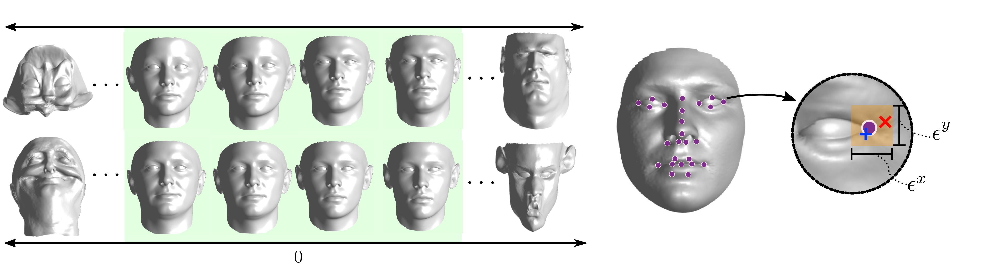

| Evangelos Sariyanidi1 | Casey J. Zampella1 | Robert T. Schultz1,2 | Birkan Tunc1,2 |
| 1The Children's Hospital of Philadelphia, 2University of Pennsylvania | |||
| Code (github) | Paper (TechRxiv) | Paper (ECCV'20) |
| 3DI is an optimization-based 3DMM fitting (3D reconstruction) method that enforces inequality constraints on 3DMM parameters and landmarks (Figure on right). Inequality constraints significantly restrict the search space and rule out implausible solutions (Figure below). 3DI is not a learning-based method, thus is more flexible; e.g., it can straighforwardly incorporate camera matrix or be adapted to an arbitrary morphable model relatively easily. |
 |
|
This project page provides demos as well as a CUDA implementation of 3DI. The 3DI method can be used for a variety of facial analysis tasks including
The various output types of 3DI are presented in the github page. |